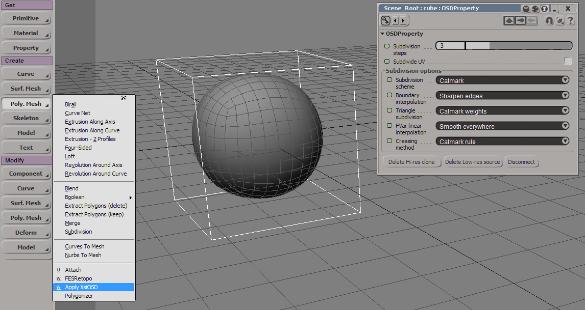
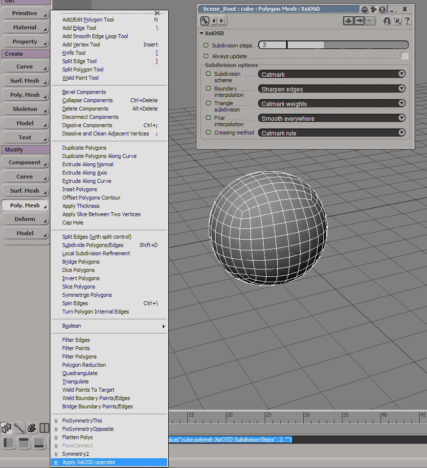

XSI OSD
Last update: 26.04.2015
Description: This is the basic implementation of the openSubdiv into Softimage.
Download: version 0.2
How to use: Install as usual addon for Softimage. To subdivide the mesh select it and chose Create - Poly. Mesh - Apply XsiOSD.
To add opensSubdiv to the mesh as operator, chose Modify - Poly. Mesh - Apply XsiOSD operator.
